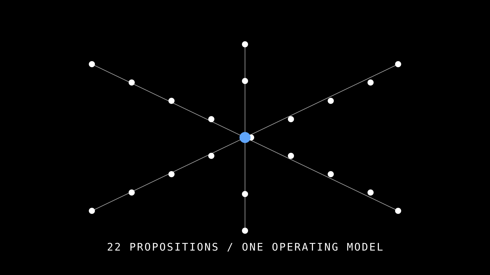

QUICK INDEX · 22 命題網格
完整命題清單
點擊任一命題卡片跳到對應段落看完整論述。P20 標為半透明（曾考慮但拒收的紀錄）。
22 命題依 6 群組排列。★ 為中軸命題（P4 / P8 / P13）。P20 為淘汰留紀錄。點任一格 → 抽屜開啟完整論述。
01
為什麼 MCP 重要
P1 突破執行工具
P2 空間+限制兩半身
P3 越做越醜的時序錯誤
02
MCP 角色
P4 限制顯現器
P5 Domain 是本體
P6 人類追美學
03
何時顯現
P7 階段完成點
P8 被動就緒
P9 滾動式開源 Domain
04
糾正美學迷思
P10 設計=解決問題
P11 光譜在設計師端
P12 死局求助更多人
P13 MCP 是 0/1 執行器
05
實作層
P14 會議是終極目標
P15 排程死線第一限制
P16 Work Breakdown
P17 自舉式 AI 審查
06
會議場景延伸
P18 場域決定角色
P19 會議模式響應
P20 （淘汰留紀錄）
P21 會議記錄者
P22 ARCHI 優先
群組 1 · 為什麼 MCP 重要
群組 1 · 為什麼 MCP 重要
P1 突破執行工具MCP 不是另一個畫圖工具 ——突破 Revit / ArchiCAD / 2D CAD / Rhino 等「作業執行」工具的範疇，回到「空間規劃」的本體。
我們在 REVIT 的作業上，更專注在用現有的 BIM，也就是突破了 REVIT、ARCHICAD、2D CAD、Rhino 等等的各種設計的「作業執行」工具 。而可以專注的把我們需要再「空間」的規劃上去完成。
— 使用者，2026-05-18（第一輪論述）
WHY
傳統 BIM 工具解決「怎麼把腦中方案畫出來 」——畫得快、畫得準、畫得可協作。但它們不告訴你方案撞了哪些限制。MCP 補上 Revit 沒解決的另一半問題：讓限制變得可見 。兩者協作，不是競爭。
HOW
把規範、法條、檢核從「設計師腦中的隱性知識」抽出來，編碼成 45 個 domain/*.md，由 20 個 Skill 編排觸發，透過 92 個 MCP Tool 在 Revit 上即時呈現。
TECHNIQUE
Domain-Driven Constraint Externalization · 三層架構 Skill / CLAUDE.md / Domain · Model Context Protocol over WebSocket
業界口訣 · 只有這行人懂
設計師畫 Revit 不是因為「它好用 」，是因為「沒得不畫 」。它是執行工具，不是思考工具。
所有用過 Revit 的設計師都知道——畫到一半發現走廊撞防火區劃，回頭改要兩小時；發現窗台撞 §41 採光，整個 facade 重來。Revit 沒讓你「先看見」這些，它只讓你「畫完才發現」。
P2 空間+限制兩半身設計師面對的不只是「畫圖」，是「空間規劃 + 設計限制 」兩個半身。前者是美學願景，後者是生硬規範。
把「空間」按照需求排出來，按照自己的美學排出來，按照設計的意象導入進去後有更多重要的事情在後面等著 ——但這些所謂更多重要的事情，其實就是設計的限制 。
— 使用者，2026-05-18
WHY
設計訓練從美感培育開始（藝術學院 4 年），但實務工作 80% 是「滿足生硬規範」的問題求解。這個落差讓設計師永遠在兩個半身之間切換，且另一個半身（限制）幾乎從來不被同樣認真對待 。
HOW
把「限制」從 BIM 流程的
事後檢核 移到
事中即時呈現 ——當設計師畫空間的時候，限制已在場，但不打斷思緒（呼應
P8 被動就緒 ）。
TECHNIQUE
Dual-Cognition Workflow · 空間規劃 (Spatial Cognition) + 限制檢核 (Constraint Cognition) 同步並行
業界口訣
建築不是純藝術，建築是「能夠真的蓋起來、不會被退件、業主願意付錢 」的藝術。少了任何一個半身，都不是建築。
設計師圈長年的張力——「念書時老師教美感，畢業後老闆教規範」。這個落差沒解決，設計師就會在兩個半身之間搖擺，最後通常都是「美感讓給規範」。MCP 想做的是讓兩個半身能夠同步 ，而不是輪流佔據設計師的腦容量。
深度閱讀
Book The Death and Life of Great American Cities — Jane Jacobs
經典論「規範如何形塑空間品質」——P2 兩半身論的精神原型
Paper Schön, The Reflective Practitioner (1983)
設計師如何在「美學直覺」與「技術限制」之間做 reflective conversation 的經典論述
Talk Patrik Schumacher — Parametricism as Style
Zaha Hadid 事務所設計總監論「參數化（即限制化）反而解放美感」的辯論
P3 越做越醜的時序錯誤傳統設計教育從「美感培育」開始，但實務作業卻被「生硬限制」反噬——這是「越做越醜 」現象的根因。
所有的設計訓練是從美感的培育開始——也就是越來越多的人會認為做的設計越久，東西就越醜 ⋯⋯那麼原因是不是就是因為對於生硬的限制不夠熟悉的情況下，沒有辦法在前期的發想中，讓限制呈現，反到了後期的現實面介入時，成為了非得妥協的妥協 。
— 使用者，2026-05-18
WHY
學生的方案大膽，不是因為他們有更高的美學品味——是因為他們還沒被限制壓過 。資深設計師的保守，是被一次次「限制反噬」訓練出來的條件反射 。「越做越醜」不是失去美感，是恐懼累積 。
HOW
解法不是「鼓勵大膽」，是讓限制變得早期可見 。設計師敢大膽是因為他知道限制在哪、迴旋空間在哪。MCP 把「事後審判」變成「事中地圖」——降低嘗試成本，恢復實驗勇氣。
TECHNIQUE
Early-Stage Constraint Surfacing · 將限制檢核從 LOD 300 提前到 LOD 100-200 · 鏈接 BEP / IDS 規格自動化判定
CHECKLIST
設計案前期是否有任何「限制檢核」流程？
檢核結果是否在「畫第一筆」之前就可見？
當限制改變時（業主變需求、法規更新），既有方案是否能自動 re-check ？
是否能區分「真硬限制（法規）」 vs 「軟限制（業主偏好）」？
資深設計師的私密話
你說「我們事務所很重視美感」——但下次有人提出激進方案時，第一個說「不行啦，這樣 §xx 條會卡 」的人會是誰？通常就是事務所最資深的那一位。
這不是抹黑資深設計師。是說明「保守」 的真實成因——他們不是不愛美感，他們是被法規退件、被業主退稿、被營造商說「這個做不出來」太多次了。如果限制能提前可見，那聲「不行啦」會變成「這樣可以，但要動 X 和 Y 」——專業判斷而不是恐懼反射。
群組 2 · MCP 的角色
P4 限制顯現器 — MCP 的核心定位這是整套哲學的中軸命題 。MCP 真正的價值不是「自動化作業」，而是「限制顯現器」 （Constraint Surface Revealer）。
我認為 MCP 就是快速讓這些「限制」顯現 ，來讓設計者在企圖保有的需求、美學、意象等極大化的拉扯上，給出最少的退讓，獲得到最美與自己最喜愛的那個成果 。
— 使用者，2026-05-18
WHY
「自動化」這個說法太膚淺也太危險——把決策權交給 AI，等於把「設計師之所以為設計師」交出去。但完全不用 AI 又錯過了 BIM 數據積累的價值。中道是「讓限制顯現，把選擇還給人 」。
HOW
在設計師「
階段完成點 」（
P7 ）被動就緒（
P8 ）——等他明示叫，再透過 Domain SOP（
P5 ）跑 0/1 檢核（
P13 ）、回報具體 PASS/FAIL + 為什麼，光譜決策還給設計師（
P11 ）。
TECHNIQUE
Constraint Surface Revealer · Passive On-Demand Activation · 0/1 Binary Verdict + Spectrum Decision Offload · Multi-Tool Parallel Orchestration
CHECKLIST
關鍵字解析：「快速」 — 早期、即時，不是事後
「顯現」 — 讓看不見的變看得見，但不替你決定「最少的退讓」 — 拉扯中找到讓步最小的方案「最美與自己最喜愛」 — 保住美學主權，不是接受平庸合規
設計倫理的分水嶺
自動化是「我替你做 」。限制顯現器是「我讓你看見 」。
這年頭很多 AI 工具都在搶「生成你的方案 」這個位置——Generative Design、Text-to-BIM、Auto-Layout。它們的價值都有，但全部繞過了一個核心問題：設計師之所以為設計師，是因為他做選擇 。MCP 選擇站在「不搶這個位置」的這一邊——你的方案還是你的，我只負責讓你選得更有把握 。
P4 容易被誤解的 3 件事
不是「禁止 AI 做決策」 ——而是「不在設計核心的決策上做」。Routine 排版、命名、整理可以；空間構想、美學取捨不行。不是「越多限制檢核越好」 ——是「越早、越精準、越被動」越好。亂彈窗會打斷思緒，違反 P8 。不是「Domain 越多越強」 ——是 Domain 要對。錯的 Domain SOP 比沒 Domain 更危險（違反 第三憲法 Domain Method Compliance ）。
深度閱讀 · P4 是 5/23 demo 的核心，建議全讀
Talk Andrew Anagnost — AU 2024 Keynote: Augmentation / Automation / Analysis
Autodesk CEO 對 AI 三柱定位的演講——P4 對應其「Augmentation」象限
Paper Latour, Where Are the Missing Masses? (1992)
經典 STS 文「技術物的道德責任」——限制顯現器把道德責任放在「顯現」而非「替你選」，是 Latour 命題的當代延伸
Podcast Lex Fridman × Karpathy — The Future of LLMs as Augmenters
Karpathy 論「AI 應該是 jet engine 給人類飛行員，不是 autopilot」——P4 哲學的科技界同調
Case Project Bernini (Autodesk Research)
Autodesk 內部「真自動化」實驗 PoC——可對比「自動化 vs 顯現器」兩條路的具體產出差異
P5 Domain 是本體MCP 的核心資產不是 tools，是 Domain Knowledge ——因為它承載「不可協商的限制」。
限制到底是啥，我覺得就是我們 MCP 的這些 DOMAIN KNOWLEDGE，他們大多是規範、生硬的法條、明確沒有辦法去改變的檢討等等 。
— 使用者，2026-05-18
WHY
tools 是執行手段（API 改變、工具淘汰、技術換代很快），domain 是知識本體 （法規 / 業界 SOP / 邊界案例的演化遠慢於工具）。把專案的「資產投資」放在 domain，是長遠正確的選擇。
HOW
每個 domain 寫成 domain/{name}.md，含觸發關鍵字、法規條號、公式、邊界案例、被引用的 Skill 清單。多 Skill 共用同一 domain ——例如 fire-rating-check.md 被 /fire-safety-check、/corridor-analysis、/building-compliance 三個 Skill 引用，規範改一次三個自動同步。
TECHNIQUE
Domain-Driven Knowledge Layer · Single Source of Truth · Skill Composition over Skill Duplication · Frontmatter Lint (/qaqc Phase 6)
CHECKLIST
新增功能時：先問「能不能用既有 domain 拼？」再問「需要新 domain 嗎？」
同一個 domain 被多個 Skill 引用 → ✅ 設計正確
同一段知識散在多個 domain → ❌ 需重構抽出共用 domain
domain frontmatter 含 references / referenced_by / tags 三欄完整 → 通過 lint
資產投資 vs 一次性成本的差異
寫 5 個工具叫做「勞力 」，寫一個 domain 叫做「資產 」。
這是 BIM 工程界的長期問題——Dynamo script、Revit Python、現在的 AI workflow，每隔 3 年就換一套。但「§41 採光怎麼算 」這件事 30 年沒變過。把知識存在「工具裡」會跟工具一起死，把知識存在「規範化的 domain 文件 」會被下一代工具繼承。
P6 人類在限制可視前提下放大膽追求美學好的協作不是「AI 設計、人類審核」，是「AI 揭露限制邊界、人類在限制可視化的前提下放大膽追求美學 」。
WHY
「AI 設計、人類審核」是 AI hype 帶來的偷懶模型——它假設 AI 能做「創意工作」，人類退到「品管」角色。實務上這個模型崩潰 ：AI 生出的設計品味平庸（訓練資料是業界平均），人類審核又被資訊淹沒（要看 100 個方案）。
HOW
翻轉——「AI 揭露限制邊界，人類在限制可視化的前提下放大膽追美學」。AI 退到低姿態但高價值 的角色（顯現），人類重新成為設計主導（決策）。
TECHNIQUE
Inverted Human-AI Loop · AI as Constraint Visualizer · Human as Aesthetic Decider
為什麼這個翻轉很重要
當 AI 開始生方案，設計師就只剩兩個下場 ：被淘汰、或變成「100 個方案的審稿員」。知道限制在哪、敢大膽追美學 」的本職。
這也是為什麼 Generative Design 工具紅了 10 年但實際採用率還是低——設計師直覺上知道「我看 100 個方案的時間比我自己畫一個還久」 。MCP 不搶你的方案生成位置，而是讓你知道每個方案撞了哪幾個限制、能不能修 。
深度閱讀
Talk Kaiwen Bian — Why Generative Design Failed in AEC (2024)
論「AI 設計」模型為何在 AEC 失敗——直接對應 P6 的舊模型批判
Paper Lubart, T. — How Can Computers Be Partners in Creative Process?
「Partner not Replacer」——創意夥伴關係的學術奠基
Case TestFit — Real-time Feasibility Sketching
業界對齊範例——AI 不出方案，AI 跑可行性，設計師畫
群組 3 · 何時 / 怎麼顯現
P7 階段完成點 — MCP 的時機不是甘特圖上的里程碑，是「想法首次落地的剎那 」——具象成果出現了、可以被思考可行性的瞬間。
這個完成點不是我們說的主計畫里程碑，大多是在它們思維或者想法上被首次落地的那個剎那 ，所以稱為階段完成。
— 使用者，2026-05-18（第二輪論述）
WHY
在「想法尚未落地」之前，過多資訊會讓設計師思緒打轉 。沒有具象成果可以被檢視，所有檢核都是抽象的——「假設你做 X 就會違反 Y」沒有實際幫助。必須等想法落地，MCP 才有東西可以檢，設計師才有東西可以決策。
HOW
透過
P16 Work Breakdown 把設計拆成小單元，每個單元有可交付物，每個交付物 = 一個階段完成點。設計師在每個點主動 invoke MCP（呼應
P8 被動就緒 ）。
TECHNIQUE
Stage Completion Point · Designer-Initiated Activation · Concrete Artifact as Prerequisite · 對應 IDS Information Delivery Specification 的階段觸發點
這跟「PM 排里程碑」不一樣
PM 排的里程碑是「給業主交期的 」，階段完成點是「給設計師自己交差的 」。
設計師最反感的就是 PM 把里程碑變成「這天必須交什麼 」——這違背設計過程的真實節奏。真實節奏是「當我畫到這個地步就應該停下來檢查一次 」——這個「應該」是設計師的本能判斷，不是 PM 的 timeline。MCP 尊重這個本能。
深度閱讀
Paper Cooper, R. —
Stage-Gate Idea-to-Launch System (1986)
汽車業 40 年驗證的階段門控制——Go/Recycle/Kill 三元決策，對應 P15
P8 被動就緒（第一憲法）MCP 限制顯現的正確姿態是「被動 」——等設計師問才回應。主動跳出限制會壓死美學想像力。本命題已升級為第一憲法 之一。2026-05-22 後 ：該頁更新為四憲法 ，第四條 Active State Re-Anchoring 是「被動」原則的時間維度補完——被動 ≠ 用過期 snapshot 回答 ，必須在 claim 時點重新驗證狀態。
限制應該不是主動，而是在設計者製作工作的過程中⋯⋯在尚未到達階段完成點 的時候，如果有過多的資訊進入或來討論，會造成設計者的思緒上陷入迴圈打轉 ，而無法完成工作！⋯⋯因此主動跳出限制我覺得很怪，被動反倒是個好的狀態 。
— 使用者，2026-05-18
WHY
技術上 MCP 完全可以接 Webhook、watcher、可以做 fail-fast。但「能做」不等於「該做」 ——主動跳出會打斷設計師的「思維落地」過程。這是場域決定的姿態，不是技術限制。
HOW
所有 MCP 工具設計為「request-response 」而非「event-push 」。沒有 watcher、沒有 polling、沒有自動觸發。設計師明示叫，工具才動。
TECHNIQUE
Passive On-Demand Activation · Anti-Fail-Fast for Creative Domains · No Watchers / No Polling / No Auto-Trigger
CHECKLIST
每個 MCP tool 是否都是「呼叫才動」？
沒有 cron / watcher / event listener 主動觸發？
UI 上沒有彈窗 / popup / 中斷式 notification？
使用者沒打字之前，MCP 全程靜音？
場域決定姿態
IDE 寫 code 時 ESLint 紅線越早越好。⚠ 走廊寬度違反 §62 」會讓他想砸電腦。同一個 fail-fast 機制，在不同場域是好設計或是公敵 。
這也是為什麼很多 BIM plug-in 死掉——它們是工程師寫給工程師的，把「即時警告 」當功能賣，但設計師需要的是「等我問了再說 」的尊重。MCP 把「不打斷」當設計原則，不是次要 UX。
P9 滾動式集眾人思維的 Domain 開源Domain 不必一次補齊，集眾人之力的開源貢獻 是達成「完整限制」最有效的路徑。
這是一個滾動的課題，目前有的已經有部分的檢討能力。但我認為集合大家思維的知識力量會相對簡單而且快速 ，也因此成立這樣的專案開始作為開源來做為蒐集的知識 。
— 使用者，2026-05-18
WHY
BIM 規範極廣（建技規 / 消防 / 結構 / MEP / 都計 / 環保 / 無障礙⋯⋯），任何單一團隊都不可能涵蓋。但每位資深設計師都有幾條「他特別熟」的規範 ——把這些「個人 know-how」貢獻給共享 domain，整個 MCP 系統的能力就指數成長。
HOW
Level 1 貢獻不需要寫程式——只需寫
domain/{name}.md（法規條號 + 計算公式 + 邊界案例 + 觸發關鍵字）+
.claude/skills/{name}/SKILL.md（觸發描述 + 引用該 domain）。詳見
停車場範本 。
TECHNIQUE
Rolling Open-Source Knowledge Accretion · GitHub PR Workflow for Non-Programmers · /domain Slash Command for Auto-Distillation
為什麼開源是唯一可行路徑
沒有任何單一公司 有 1000 個資深建築師。幾萬個 ——只要每個人貢獻自己最熟的那 1-2 條規範。
這是 Wikipedia 模型的 BIM 版——「我懂這條」 的人寫一條，整個社群就多一條。沒有人需要懂全部，但每個人都能補一點。Autodesk 自己做 100 條 domain 要 5 年，開源社群做 100 條 domain 可能 5 個月——這就是 MCP 選擇知識開源 而非知識授權 的根本理由。
深度閱讀
Book Eric Raymond — The Cathedral and the Bazaar (1999)
開源典範論述——「Given enough eyeballs, all bugs are shallow」對應「Given enough domain experts, all constraints are knowable」
Case OpenStreetMap
「群眾外包地圖知識」的成功案例——比任何單一公司製作的地圖更精準
群組 4 · 糾正美學迷思
P10 設計 = 解決問題，美學 = 手段設計師不是「美學主義者」，是「解決問題者」。能在解決各方問題同時保持美感 = 設計師功力考驗。「悖逆項限制」是假命題 。
這件事情不該被強調。設計的真實重點叫做解決問題，美學是一個重要的手段 ，但是能夠解決各方問題同時保持美感的結果，就是設計者的功力考驗，因此沒有你說的悖逆項限制。
— 使用者，2026-05-18（第二輪論述，糾正 AI 設想）
WHY
這條是使用者明確糾正 AI 的設想 。AI 容易把設計師描繪成「為美感對抗世界」的浪漫主義者——這是誤解。真實的設計師：業主要這個、預算只有那個、結構卡這條、法規不准那條——設計師的工作就是在這堆衝突裡找出能蓋的、能審過的、能讓業主簽字、又同時是好看的方案 。
HOW
MCP 不該假裝「在保護設計師的美學」——它的任務就是把限制呈現清楚，至於「保住多少美學」是設計師的本事。不要把 MCP 包裝成 AI 美學顧問 ，定位就是限制顯現器，乾淨清楚。
TECHNIQUE
Reject Aesthetic Advocacy · No "Style Recommendation" Features · No "Save Your Beauty" Marketing
設計師的真實自我認知
沒有任何設計師會說「我是來保護美感的 」。我是來解決問題的 」——美感是順便、是功力證明、是業主要不要再找你的關鍵，但不是核心使命。
這個區別超重要——很多 AI 工具把設計師當「浪漫主義者 」，所以做了一堆「保護你的創意」的功能。設計師看到都覺得：「拜託你別污辱我，我才不是這種人。」 真實的設計師更接近「職業解題者 」——複雜問題的綜合解決者。MCP 服務的是這個身份。
深度閱讀
Book Donald Schön — Educating the Reflective Practitioner (1987)
經典「設計師作為反思實踐者」論述——強調「解決複雜問題」而非「追求美學純粹性」
Article Rem Koolhaas — Bigness, or the Problem of Large
普立茲克得主論「大尺度建築不是美學問題，是工程協同問題」——P10 的精神同調
Talk Bjarke Ingels — Yes is More
BIG 事務所論「美感是約束的副產物」——P10 的當代演繹
P11 光譜在設計師端真實設計場域不是 0/1 二元抉擇 ，是「維度與光譜的漸層 」——找各方可犧牲的 win-win strategy。但這個光譜決策是設計師的工作 ，不是 MCP 的責任。
WHY
設計面對的衝突很少是「合規 vs 不合規」這種非黑即白——更常見是「採光多 5% 立面就要切掉一片 / 結構要多一根柱 」這種光譜權衡。每個維度的權重涉及業主關係、預算、未來改建空間、營造商可行性⋯⋯這些變數 MCP 不知道 。
HOW
MCP 提供「FAIL 的原因 + 量化數據 」，設計師進行「光譜在哪裡 + 應該選哪個 」的決策。MCP 不假裝懂業主關係、不假裝懂預算敏感度、不假裝懂事務所內部政治——這些本來就不是工具該管的 。
TECHNIQUE
Spectrum Decision Offload · MCP returns Binary, Designer chooses Continuous · Refuse to Recommend "Best Option"
為什麼 AI 不該幫你選
AI 不知道業主上次見面臉色多難看 、結構技師為什麼這條死不讓 、事務所老闆對立面美感的潛規則 。不可言明的權重 才是真正的設計判斷。
這也是為什麼 AI 的「最佳方案推薦 」永遠膚淺——它只能用「明面上的參數」算最佳。但設計師心裡有 50 個業主沒明說、規範沒寫、教科書沒教的隱性約束 。MCP 把選擇還給設計師，不是不夠先進，是承認 AI 無法承擔這種判斷 。
P12 死局時跳出人機互動，求助更多人當設計遇到「限制 vs 美學」的死局，不應該繼續跟 AI 對話纏鬥 ——這是 MCP 的能力邊界。
一旦被限制住，我認為人應該要跳脫與人機互動的死局 ，反而應該要去求助更多的【人】來進行腦力激盪 。
— 使用者，2026-05-18
WHY
AI 對話有沉沒成本陷阱 ——你跟它聊了 30 分鐘，會本能覺得「再問一個應該就有答案了」。但其實在死局裡，問 100 次都是同樣的答案 。早點關掉對話、打電話給人，省下的不只是時間，是你的判斷力。
HOW
死局判定 — 當你發現：(1) 在問同一個問題的不同變形 (2) AI 一直給類似建議都沒解 (3) 感覺被困住——那就是死局。正確做法：關掉 AI、打電話給老闆 / 業主 / 結構技師 / 室內設計師 。
TECHNIQUE
Honest Capability Boundary Acknowledgment · Branch C Response Pattern from Tool Call Data Honesty · No "Try Harder" Sycophancy
CHECKLIST
過去 10 分鐘是否問過 AI 同一概念 3 次以上？→ 死局徵兆
AI 回答是否反覆出現「您可以試試 X 或 Y」？→ 死局確認
你是否開始覺得「再問一個應該就有答案」？→ 沉沒成本陷阱啟動
你身邊是否有真人能在 5 分鐘內聯絡到？→ 立刻打電話
AI 認輸 vs 硬掰
會說「這超出我能解的範圍 」的 AI，比會「我們可以試試看 」的 AI 好得多。
這也是 GPT-style 的「過度討好」 反模式——AI 怕讓你不開心，所以永遠不說「我不行」。但建築專業的死局是真死局——再聊兩小時也沒結果。MCP 設計上接受「我這裡不行了，去找人 」是專業判斷，不是失敗。設計師都懂這個——你問結構技師問不出來，會去找另一位資深的或回頭問業主重新議——這是人類專業協作的常識，AI 應該學的是這個。
深度閱讀
Paper Anthropic — Constitutional AI: Harmlessness from AI Feedback
AI 訓練「會說 No」的學術基礎——對應 P12「會認輸的 AI 是好 AI」
Book Annie Duke — Quit: The Power of Knowing When to Walk Away
「沉沒成本陷阱」實證——對應「跟 AI 纏鬥的死局時機判定」
Article NN/g — Sycophancy in AI Assistants
Nielsen Norman Group 論 AI「過度討好」反模式
P13 MCP 是 0/1 執行器MCP 的本質是「執行結果只有對/錯」。光譜思維是設計師接到結果後的人類決策，不是 MCP 該承擔的 。
我認為部分的檢討就是 2 元，而不是我講的光譜做法。光譜是解決辦法，MCP 是執行的結果，結果只有對錯 ，但不代表錯誤一旦被忽略則專案無法執行，這件事情你必須要先能夠同意。
— 使用者，2026-05-18（第三輪論述，糾正 AI 建議）
WHY
這條是使用者明確糾正 AI 。AI 一度建議「Domain 應該重構為光譜回應，這樣更人性化」——使用者直接否決。理由：MCP 的本質就是「檢核出對/錯 」。把 0/1 包裝成光譜會稀釋判定的清晰度，反而傷害決策。
HOW
所有
check_* 工具回 binary
PASS /
FAIL + 量化數據（例：缺口 3.28 m² / 採光比 8.7%）。
不回「建議怎麼修」 。光譜決策由設計師接手（呼應
P11 ）。
TECHNIQUE
Binary Verdict + Quantitative Detail · No Recommendation Bloat · Trust Designer's Spectrum Decision
CHECKLIST
每個 check_* 工具是否只回 PASS/FAIL + 量化？
是否有 Recommendation / Suggestion 欄位混進去？→ 該砍
FAIL 結果是否含「為什麼 FAIL」（差距數據）？→ ✅ 該保留
是否有「建議方案 A/B/C」自動產生？→ ❌ 違反 P13
「對錯不代表無法執行」
很多送審圖也是「妥協後通過 」的——起點 。
這是業界常識但 AI 容易誤解——「FAIL = 必須改」這個本能反應是工程師心態 ，不是設計師心態 。設計師看到 FAIL 想的是「這條我能不能跟業主說值得保留 + 申請放寬，跟結構技師 / 機電 / 業主談談大家怎麼讓步 」。AI 不該替你決定要不要 fix，AI 該做的是清楚告訴你 FAIL 在哪、差多少 ，剩下交給你的專業判斷。
P13 容易違反的 3 件事
Domain SOP 寫「建議改成 X」 — Domain 只寫法規 + 計算公式，不寫「建議方案」。Skill body 主動 propose 修法 — Skill 編排檢核流程，不編排「修法建議」。Tool response 加「Recommendations[]」陣列 — 那不是 tool 該回的，那是設計師的工作。
群組 5 · 實作層
P14 同步協作會議是 MCP 的終極目標3 個設計師 + MCP 一起開會的中間態，是 MCP 專案的終極價值場域。
這個討論我認為會是這個 MCP 專案的終極目標 ⋯⋯但⋯⋯大多的設計人員在思維的觀念內並沒有對於工作上的任務有盤點與排序的習慣 。
— 使用者，2026-05-18
WHY
真實的設計決策不是
1 人 + AI ，而是
3-5 人 design review + AI 。當業主、結構技師、機電、設計師同桌時，MCP 能即時把
每個提案撞到的限制 呈現出來——這比事後再開會檢討高效 10 倍。但這需要先解決「會議流程模式」（
P18 ）、「響應風格」（
P19 ）、「會議記錄」（
P21 ）。
HOW
目前還沒到——大多設計人員沒有「工作任務盤點與排序」的習慣（他們把全部時間用在「思維落地」達到
P7 ）。MCP 終極要走的方向需要先
培養使用者習慣 + 建立會議模式 ，這是 3-5 年的目標。
TECHNIQUE
Multi-Stakeholder Live Coordination · Real-Time Constraint Surfacing in Group Setting · Future P14 Target State
為什麼是「終極目標」不是「現在的目標」
業界開 design review 時，講「採光不夠」要花 3 天回頭算。這個方案的採光是 11.2%，差 1.3% 」——下次會議再說 」變成「當場決定 」。
這是 BIM 工程業 20 年想做的事但一直沒做到——Live Coordination Meeting 。Autodesk 自己也在推（ACC Coordinate / Navisworks），但都還停在「碰撞檢測」這種已經畫完才能檢 的層次。MCP 想做的是「方案還在白板上時就能檢 」——這需要先把 P7 / P8 / P11 / P12 都做穩才能進這步。
P15 排程死線是設計流程的第一限制死線下，完成度 80 / 60 / 100 無差異 ——只要有交付物，下個動作就能啟動。0 才會卡死整條工作流。
抵達死線下的完成度 80 和 60 和 100 的差異其實無差異 ，反而是 0 才是無法被判斷的狀態，那這樣的工作流程就可以開始轉動。
— 使用者，2026-05-18
WHY
設計師最大的隱性敵人不是規範、不是業主——是「追求完美而錯過死線 」的個性傾向。死線下，60% 完成的方案能讓後續流程啟動（業主審、結構審、機電審），100% 完成沒提早交也是 0。有交付物比交付物完美重要 。
HOW
MCP 該支援「不完整的模型也跑檢核 」——不堅持「沒畫完不能查」。當模型只有 60% 完成度時也能跑 ARCHI 5 工具批次（demo 演示了這個），讓設計師提早知道方向對不對 ，再用剩下時間修正。
TECHNIQUE
Deadline-Aware Workflow · Incomplete-Model-Tolerant Checking · Stage-Gate Go/Recycle/Kill Decision · "Strategic Technical Debt" Acceptance
設計師的私密恐懼
「我還沒做完，不想給人看 」是設計師最常見的死線殺手。60% 就給看比 100% 才給看好 100 倍 ——因為剩下 40% 可能根本沒人在意。
這是設計教育沒教好的事——學校給你 1 學期做一個 project，所以你習慣「做完才秀 」。但實務界 1 週要交 3 個 progress，這時候「提早秀、聽回饋、修方向 」遠比「悶頭做完才驚動天地」高效。Agile 業界稱這個為 「Incompleteness is harnessed」 ——不完整不是缺陷，是策略。
深度閱讀
Article Korte Company — Design-Build: The Design Cannot Be Complete
業界正式承認「建築與工程設計無法完整」——P15 的營造業官方對標
Book Jeff Sutherland — Scrum: Doing Twice the Work in Half the Time
Agile 經典——「Incompleteness as Strategy」的學術奠基
Page 業界證據完整版
含 Boehm 100x 規則、70% 返工、$15-25K 誤差等量化證據
P16 Work Breakdown 讓階段點可識別沒拆分 = 沒節點。MCP 只能等「整塊完成」（可能要 1-2 週）才能介入。
將設計工作給 BREAK DOWN 去做更細緻的拆分 ，來讓每個工作的成果都可以有，而不是一整塊的卡住。
— 使用者，2026-05-18
WHY
「我在做設計」是太大的工作單位——沒節點，MCP 只能等「整塊完成」才能介入。拆成「1F 平面 LOD 200」「外牆系統 LOD 300」「樓梯 LOD 250」——每個都是可識別的階段完成點 ，每個都可觸發 MCP 對應的檢查工具組。
HOW
沿用業界
BEP +
LOD +
IDS 三套既有規範——不重新發明 WBS，而是
orchestration 既有標準 。每個 LOD 階段對應一組 ARCHI 工具組合。
TECHNIQUE
Work Breakdown Structure for BIM · LOD-Aligned Checking Pipelines · IDS-Compliant Stage Triggers · 8/80 Rule Compliance
業界 SOP 早就有了，我們只是接通它
BEP 寫 30 年、LOD 寫 20 年、IDS 寫 5 年。已經幫你想好怎麼拆設計工作 了，
很多設計師覺得「BEP 是 PM 的事，我不用懂 」——但 MCP 上場後 BEP 變成「你每個階段交什麼，MCP 該檢什麼」 的明確映射。一份你以前覺得空話的文件，突然變成「定義 AI 行為的設定檔」。這是 MCP 給 BIM 老法規的新生命。
反模式警告：8/80 Rule
工作包應 8-80 小時 ——過細變 micromanagement 反而拖垮整條流程警告：96 工具不該變成 500 個微任務 ——保持「設計師可一次完成的單元」尺度拆分到「每根牆都觸發一次檢核」是反人類設計 ——拆到「每個樓層平面完成觸發一組檢核」就對了
P17 自舉式 AI 審查分身Domain 治理走「使用者短期親自審查 + 長期把審查邏輯透過對話訓練出 AI 審查分身」路線。
這個課題，我可以來進行評估審查，未來我也會逐步地把我審查的邏輯在你我的互動下，產生出另一個有能力審查的 AI 分身 ，這個反而我不擔心。
— 使用者，2026-05-18
WHY
P9 開源讓 Domain 累積快——但誰把關品質 ？人工審查不可擴展（社群 100 個 PR / 月使用者審不完）。解法：把使用者「腦中的審查標準」逐步透過 AI 對話外化、形式化 ，最終訓練出一個能執行同樣判讀的 AI 分身。
HOW
短期：使用者親自審查所有 Domain 貢獻（包含 fork 老師寫的、社群貢獻的）。長期：透過「使用者 + AI」對話互動，逐步把「Revit 既有功能優先 / 工具設計三問 / marginal value 評估 」這些判讀邏輯記下、抽象化，最終生成 prompt-engineered 審查 agent。
TECHNIQUE
Bootstrap AI Review Agent · Conversational Externalization of Review Heuristics · ultrareview / Multi-Agent Code Review as Technical Carrier
這是 AI 時代的「徒弟培養」
資深建築師帶徒弟 5 年，徒弟才學會「什麼方案會被退、什麼可以推 」的判讀。轉移給 AI ——你跟 AI 對話 5 個月，AI 也能學會。
這比想像中可行——你問「為什麼這個 PR 該退？ 」回答「因為違反工具設計三問第 2 條 marginal value 為 0」——這就是一筆訓練資料。累積 100 筆，AI 分身就有 80% 的判讀能力。再 200 筆，就能 95%。沒人能複製一位 20 年資深建築師的全部判斷，但 1000 筆「為什麼這個對 / 那個不對」可以模擬大部分 。
⚠ 本命題為未來工程議題 ，已紀錄為 /handoff 候選項目，本場 5/23 小聚不展開實作。詳見 BIM_MCP 站點未來工程清單。
深度閱讀
Paper Anthropic — Specific versus General Principles for Constitutional AI
「自我訓練 AI 把人類審查邏輯外化」的學術奠基
Tool Claude Code — /ultrareview slash command
多 agent 雲端 review 的技術載體——P17 可能架構在這上面
Article Karpathy — Software 2.0
論「程式碼從手寫變成由樣本訓練」——P17 的審查邏輯演化是同類典範
群組 6 · 會議場景延伸
P18 場域決定 MCP 角色 — 3 模式個人 IDE 場景：MCP 被動就緒（P8）；同步協作會議：可能需要不同模式。
WHY
P8 被動就緒是針對「1 人 + AI 」的場景。在「5 人 + AI 」的會議場景，誰來叫 是個新問題：每個人都叫會吵架，全部不叫又失去 MCP 價值。需要場域特定的會議協議。
HOW
提供 3 模式供會議選用（見下表）。推薦組合：默認沉默（c），主持人可切換 invoke（a） 。完全禁用自主拋限制（b）——違反 P8 而且不可預測。
TECHNIQUE
3-Mode Meeting Protocol · (c) Silent default + (a) Moderator-Invoke switch · (b) Auto-Push BANNED
模式 UX 設計 適用情境
(c) 沉默 推薦預設 全程旁聽不發言，會議結束自動產報告 多數會議的默認 (a) 主持人 會議指定 BIM Coordinator 有 invoke 權 正式 design review (b) 自主拋限制 不建議 MCP 偵測「方案決議階段」主動拋限制 違反 P8 — 不採用
會議主控權的潛規則
設計會議跟法庭一樣——誰能發言、什麼時候、講多久 都是潛規則。
這也是為什麼會議要設「主持人模式 」——讓主持人有「該問 AI 的時候叫 AI 」的權限，其他人提案 AI 不會擅自跳出否決。這個簡單的權限設計把「AI 是會議參與者」 這個棘手問題降級成「AI 是主持人的顧問 」——熟悉的職位關係。
P19 會議模式響應風格會議死線壓力下，MCP 的「長答案」就是「死線殺手」。必須有「會議優化模式」。
WHY
個人 IDE 模式下 AI 可以慢慢想（extended thinking）、可以給 500 字深度分析——使用者願意等。但會議桌上 5 人盯著你看，30 秒沒答案就尷尬，2 分鐘沒答案會議死掉 。同一個 MCP 工具在會議場域必須硬性截斷 響應長度。
HOW
會議模式 = system prompt 加 meetingMode: true flag → 強制：響應 < 30 秒 / bullet point only / 禁 Extended thinking / 不反問。寧可少答也不要拖節奏。
TECHNIQUE
Meeting-Optimized Response Mode · Sub-30s Response · Bullet-Only Format · No Reasoning Trace · Force-Concise System Prompt Flag
維度 個人 IDE 模式 會議模式
響應時間 10 分鐘內可接受 < 30 秒 響應長度 散文敘事可 bullet point only / < 200 字 Extended thinking 可用 禁用 對話風格 反問澄清可 不反問，最多請求 1 次澄清
會議節奏感是真的
「讓我想一下喔 」——人類講這句話，會議桌大家都會給 30 秒。這 AI 是不是壞了 」。
這也是為什麼 ChatGPT-style 的「慢慢生成 token 」UX 在會議場景失效——個人單獨用 AI 時看著文字一個個冒出來覺得很酷，會議桌上看著文字慢慢冒大家會覺得「等到天荒地老 」。會議模式必須瞬間給整段 ，或者明確說「我這題答不出來，跳下一題」。
深度閱讀
Article Stripe — Reducing Meeting Friction
「會議時間就是金錢」工程文化——P19 響應風格規格的精神來源
Book Patrick Lencioni — Death by Meeting
論「會議節奏崩壞」的後果——P19 的反面教材
Talk Daily Standup Methodology
軟體業「每人 < 1 分鐘」典範——對應「AI 在會議桌也要 < 30 秒」
P20 多人決策對 MCP 報告格式提新要求 · 淘汰留紀錄原構想：報告呈現「多方權衡」作為辯論素材。淘汰 。留下紀錄是為了讓未來閱讀者知道：哪些設計選項曾經考慮但被刻意拒收 ，避免循環討論。
WHY 淘汰
P13「MCP 是 0/1 執行器」 太核心，不能在會議場景被稀釋成「多方權衡」。會議辯論是
設計師責任 ，不是 MCP 該承擔。保留 P13 純粹性 > 為會議讓步。
為什麼留
設計討論常常會 loop 回原本拒絕過的選項——保留 P20「曾考慮但拒收」的紀錄能阻斷循環。這也呼應 Branch C「拒收的工具要留紀錄解釋為什麼拒 」的精神。
TECHNIQUE
Explicit "Considered but Rejected" Records · Anti-Pattern Documentation · Loop Prevention via Decision Trail
「拒絕的紀錄」的價值
設計團隊最怕的不是「有人提出爛主意 」，是「有人 6 個月後又提出同一個爛主意 」。3 秒看出「這想法已死過一次」 。
這也是 Architectural Decision Records（ADR）的核心精神——「拒絕了什麼跟採用了什麼一樣重要 」 。22 條命題裡 P20 是唯一一條淘汰的——把它留下並標明「淘汰留紀錄」，是專案治理的成熟表現，不是缺陷。
P21 MCP 會議記錄者會議結束後 MCP 自動產出會議紀錄。AI 即時對應「對話 ↔ 規範」是業界沒有的能力。
WHY
設計會議講「採光不夠 」「走廊太窄 」這類話時，會場沒人會即時翻書找 §41 / corridor-analysis-protocol。會議結束後寫紀錄的人也通常用「「採光不足，要確認 」這種空話帶過。實際 26% 返工就來自這種紀錄模糊 （Eracore 統計）。MCP 即時做「對話 ↔ 規範」對應，把空話變成可追蹤的 action item。
HOW
沉默模式下 MCP 全程聽會議內容，識別關鍵詞 → 對應到 domain/*.md。會議結束自動產出三類清單：(1) 觸及的限制 (2) 未解決衝突 (3) 待後續決策項目（含負責人 + due date）。
TECHNIQUE
Real-Time Conversation-to-Regulation Mapping · Auto-Generated Meeting Minutes · Three-Bucket Categorization (Touched / Unresolved / Action)
三類自動產出
觸及的限制清單 ：即時抓對話關鍵詞 → 對應到 domain/*.md
會議中有人說「採光不夠」→ MCP 標記「觸及 §41 / daylight-area-check.md」
「走廊太窄」→ 觸及「corridor-analysis-protocol.md」
未解決衝突 ：哪些方案還沒決定，為何卡住待後續決策項目 ：Action items + 負責人 + Due date（呼應 P15 排程死線）
會議記錄的真實困境
「誰來寫會議紀錄 」是設計事務所的燙手山芋 ——資深的不想寫（太花時間）、資淺的寫不準（聽不懂行話）。
這也是為什麼 P21 是 P14「終極目標」的關鍵子任務——真實會議的價值 50% 是當下討論，50% 是事後紀錄能否落實 。沒有精準紀錄的會議等於白開。MCP 能即時做「對話 → 法規 → action」三段映射，是業界目前沒有任何工具能做的事 。Procore / ACC 都只能事後分類，做不到即時對應 domain。
P22 ARCHI 優先 — 大多設計師卡在建築模型階段設計師在 ARCHI 模型階段就被限制壓住（採光、走廊、樓梯、外牆開口、面積），還沒走到結構 / MEP 階段就已經卡死 。
我不認為要卡死在這樣的整合邏輯上，MEP 模型的介入是在增加複雜程度，但事實上大多的人員往往在 ARCHI 的模型就已經先卡住了 ，所以這 9x 的工具在面對建築模型的邊界與限制的實作上我認為勢必可行。
— 使用者，2026-05-18
WHY
業界常推 BIM 多專業整合的願景——但現實是 80% 設計案連 ARCHI 自己都還沒搞定 就死在規範。談 ARCHI × MEP × STRUC 整合是解決還沒成為問題的問題 。MCP 應該優先服務「真實的最常見痛點 」——ARCHI 自己的合規檢核。
HOW
MCP 的 ARCHI 類工具（採光 / 排煙 / 樓梯 / 外牆開口 / 樓板開口）就足以解決多數痛點。不強推 MEP 整合的複雜情境 ——等 ARCHI 用穩了再說。簡化劇本：純 ARCHI 模型 + 6 個既有 ARCHI 類檢查工具。詳見 5/23 Live Demo。
TECHNIQUE
ARCHI-First Strategy · Decline Premature MEP Integration · Solve Common Problems Before Edge Cases · Pareto Principle in BIM Workflow
業界 BIM 願景 vs 真實痛點
每個 BIM 講座都在講「多專業整合 + 4D + 5D + 6D 」。採光夠不夠 」這關就卡了好幾天。先讓你過第一關，再聊第十關的事 。
這是務實派 vs 願景派的張力——Autodesk Marketing 喜歡講 6D BIM 完整整合，但設計事務所主管問員工「你做案花最多時間在哪 」答案永遠是「規範檢核 + 修改 」。MCP 選擇站在務實派 這邊——5/23 demo 只演 5 個 ARCHI 工具，不演 MEP 碰撞，因為這才是受眾 80% 的真實工作場景。
SYNTHESIS · 體系結構
22 命題彼此關係圖
P1 (突破執行工具) ─┐
P2 (空間+限制兩半身) ─┤── 為什麼 MCP 重要
P3 (越做越醜的時序錯誤) ─┘
↓
P4 (限制顯現器定位) ─┐
P5 (Domain 是本體) ─┼── MCP 的角色
P6 (人類在限制可視化下追求美學) ─┘
↓
P7 (階段完成點) ─┐
P8 (被動就緒) ─┼── 何時 / 怎麼 顯現限制
P9 (滾動式開源 Domain) ─┘
↓
P10 (設計 = 解決問題) ─┐
P11 (光譜漸層在設計師端) ─┼── 糾正「美學被限制反噬」迷思
P13 (0/1 在 MCP 端) ─┤
P12 (死局求助更多人) ─┘
↓
P14 (同步協作會議 = 終極目標) ─┐
P15 (排程死線是第一限制) ─┤
P16 (Work Breakdown) ─┼── 實作層 / 未來路徑
P17 (自舉式 AI 審查) ─┘
↓
P18 (場域決定角色) ─┐
P19 (會議模式響應) ─┼── 會議場景延伸
P21 (會議記錄者) ─┤
P22 (ARCHI 優先) ─┘
P20 ❌ 淘汰留紀錄
這 22 條命題形成從「為什麼」到「實作層」完整的思想體系 ，是 5/23 五月小聚的哲學中軸。